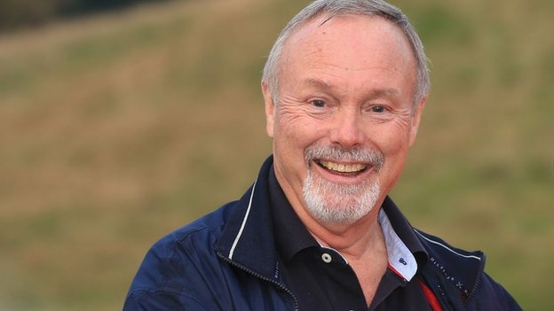

Matthews was born in Newport, South Wales, at the then Lydia Beynon Maternity Hospital. Matthews returned as an adult to include the manor house that housed the hospital within the Celtic Manor Resort. He grew up in the town of Newbridge, Caerphilly. He studied at Swansea University and received a bachelor's degree in electronics in 1969.
After an apprenticeship at British Telecom's research lab at Martlesham Heath, Matthews left Britain and joined MicroSystems International, a chipmaking operation affiliated with Northern Telecom (which became Nortel Networks) in Ottawa, Canada.
Matthews' first enterprise was started in collaboration with fellow Briton and Microsystems employee Michael Cowpland in 1972. To raise seed money for future enterprises they had planned, the pair intended to import and sell electric lawnmowers built in the UK. Conventionally and as well accounts by Terry Matthews the name Mitel is thought to be a contraction of "Mike and Terry's Lawnmowers".However Cowpland is quoted as saying that it stands for "Mike and Terry ELectronics". This first endeavour was a fiasco; the shipping company carrying the first batch lost the container.When the lawnmowers finally arrived, the ground was covered with snow in the Canadian winter and no one would buy them. Matthews later said "That taught me a key lesson — the importance of timing. The shipping company lost the lawnmowers! By the time they showed up no-one wanted them, as you can't cut grass when it's covered with snow."
Mitel became a technology consultancy company run from home to the various companies around Ottawa's emerging high-tech district. Mitel's clients included the National Research Council, the Communications Research Centre, and a handful of pioneering start-ups including SHL Systemhouse which was later purchased by EDS and now is part of HP and Quasar Systems (now Cognos).
Obtaining funding from a $4,000 bank loan and as well from their own savings and a group of angel investors (notably Kent Plumley) the two developed a telephony DTMF tone receiver based on Cowpland's Ph.D. thesis. This was a major advance in the technology since they were able to sell receivers at a fraction of the cost of competing versions, while gaining returns of 1000%. Additionally, Mitel later became a chip manufacturer with the acquisition of the Silek foundry in Bromont, Quebec.
Later the pair realized that the then new technology of microprocessors and other semiconductor devices would make a similar change in the market for small PBXs. The SX200 PBX launched to immense success, being cheaper to purchase, quicker to install and far more functional. Mitel became one of the more successful manufacturers of small PBX systems and telecom semiconductors in the world, floating on the New York Stock Exchange in 1981.
In 1985, British Telecom bought a controlling interest in Mitel. Cowpland would later form the company that became Corel and Matthews later founded Newbridge Networks.
In 1986, Matthews drove Newbridge to become a leader in the worldwide data networking industry, manufacturing data communications products, especially ATM devices androuters. In 2000 the company employed more than 6,500 employees with recorded FY 1999 revenue of $1.8 billion. Later in 2000, Newbridge was acquired by Alcatel for $7.1 billion. Matthews' personal stake in Newbridge was valued at over a billion dollars, and as a result of the transaction he became the largest single shareholder in Alcatel.
In 2000, he reacquired the Mitel PBX business and company name, taking it private. He has invested heavily ($600 million by 2006) in Mitel to turn it into a broadbandcommunications company. The company has made significant investments in enterprise Voice over IP telephony technology. Mitel's manufacturing business was spun off asBreconRidge. The company acquired Intertel in April 2007.Mitel went public again in 2010. Mitel announced the purchase of Aastra Technologies in November 2013.Mitel announced the purchase of Mavenir Systems in March 2015.Mitel announced the purchase of Polycom in April 2016.